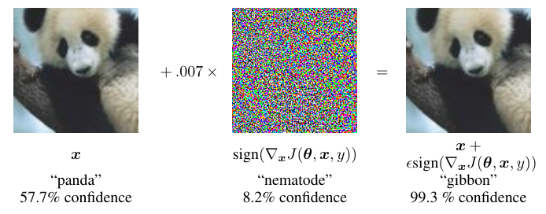

Goodfellow's linear explanation got the attack right and the cause wrong
Explaining and Harnessing Adversarial Examples handed the field its one-step attack and its first practical defense, then watched the vulnerability it blamed on linear models get traced to the training data itself.
Explaining and Harnessing Adversarial Examples
Read the paperSeveral machine learning models, including neural networks, consistently misclassify adversarial examples—inputs formed by applying small but intentionally worst-case perturbations to examples from the dataset, such that the perturbed input results in the model outputting an incorrect answer with high confidence. Early attempts at explaining this phenomenon focused on nonlinearity and overfitting. We argue instead that the primary cause of neural networks' vulnerability to adversarial perturbation is their linear nature. This explanation is supported by new quantitative results while giving the first explanation of the most intriguing fact about them: their generalization across architectures and training sets. Moreover, this view yields a simple and fast method of generating adversarial examples. Using this approach to provide examples for adversarial training, we reduce the test set error of a maxout network on the MNIST dataset.1
A label flipped by a change too small to see
A year before this paper, Szegedy and colleagues found that state-of-the-art neural networks misclassify inputs a hair away from examples they get right. The same doctored image fools networks of different depth trained on different slices of the data.2 The perturbation is too small for a person to notice, and the wrong answer arrives with high confidence. Why this happens was open, and the going guesses reached for something exotic in deep networks.
Goodfellow, Shlens, and Szegedy answer in one line: the culprit is the ordinary linear behavior of these models in high dimensions, and no exotic property is needed to produce the effect.1 From that single claim the paper derives a fast attack, proposes a training defense, and explains the fact its predecessors could not, why the examples carry from one model to another.
What Szegedy actually hypothesized
The paper opens by placing itself against earlier work, which it says "focused on nonlinearity and overfitting."1 But Szegedy's 2013 paper did not rest its account on nonlinearity. It hypothesized that adversarial inputs sit in rare, precisely located regions of the input space, and that the learned map from input to output is close to discontinuous. A classifier can behave sensibly almost everywhere and still hide pockets where it fails.2
adversarial examples represent low-probability (high-dimensional) "pockets" in the manifold, which are hard to efficiently find by simply randomly sampling.2 Szegedy et al., Intriguing Properties of Neural Networks (2013)
So the nonlinearity framing the paper argues against is partly its own construction. The disagreement that matters is not about a straw man but about geometry: pockets that are rare and hard to find, against the abundance the linear view will need.
Why a bounded nudge grows with dimension
Start with the intuition the algebra will confirm. Digital images keep only 8 bits per pixel, so any change below one part in 255 is thrown away by the sensor. A perturbation whose every component stays under that precision, written \lVert \eta \rVert_\infty < \epsilon, ought to leave a well-separated classifier's answer untouched. For a single linear unit, that expectation is wrong, and the reason is the dimension of the input.1
Look at what the perturbation does to one weighted sum. The clean activation is w^\top x; the perturbed input adds a second term.
With that choice, the increase is a sum of n non-negative terms whose average size is \epsilon\, m, and it comes out as a product of three plain quantities.
- w^\top \etathe growth in the unit's pre-activation caused by the perturbation.
- \epsilonthe max-norm bound on every component, fixed by sensor precision and never growing with dimension.
- mthe average magnitude of a weight.
- nthe input dimension.
That is the whole of the linear explanation. Many changes each too small to see, aligned with the signs of the weights, sum to one change large enough to move the decision. The paper calls the effect an "accidental steganography," where a linear model is forced to attend to whatever signal aligns with its weights, even when louder signals are present.1 A softmax regression is enough to show it; no depth is required.
One backprop step to fool the model
The units that make modern networks easy to train are built to act linearly. ReLUs, maxout units, and LSTMs are deliberately close to linear so gradients flow, and even sigmoid networks are tuned to sit in their straight, non-saturating regime.1 If a network behaves this linearly, the cheap linear attack should damage it too. Linearize the loss around the current input, and the best perturbation under the max-norm bound is the sign of the gradient.
A budget on \lVert \eta \rVert_\infty caps each component but not their number, so the fastest way to raise the loss is to push every component to its limit in the direction that climbs. Size buys nothing once a component is at the boundary; only its sign is left to choose. One backpropagation gives the whole vector at once. The attack is reliable across model families. On MNIST at \epsilon = 0.25, a maxout network misclassified 89.4% of test examples at 97.6% average confidence, and a shallow softmax model 99.9%. On CIFAR-10 at \epsilon = 0.1, a convolutional maxout network reached 87.15%.1

The figure spends its whole premise in one row. The added vector on the left is \epsilon = 0.007 of the sign image, the magnitude of a single level in an 8-bit encoding. That is why the panda on the right looks identical to the panda on the left. The label underneath does not agree. Confidence does not merely survive the change. It rises, from 57.7% on the true class to 99.3% on a class the image does not resemble. The middle panel earns its place by ruling out the easy dismissal: the perturbation is the gradient's sign, a structured direction, so the flip is not a fluke of random noise.
Training on the attack, and its ceiling
If the attack is one cheap step, the defense can be too. Mix each clean example with its adversarial version inside the loss, weighting the two halves equally.
It works, up to a point the paper states plainly. Clean MNIST test error fell from 0.94% to 0.84%, and a wider 1600-unit model reached 0.782%, then the best result on permutation-invariant MNIST. Error on fresh fast-gradient-sign examples dropped from 89.4% to 17.9%.1 The paper then records its own qualification: when the hardened model is still wrong, it is wrong at 81.4% average confidence. The defense narrows the hole without closing it, and the confident errors that remain are the ones the next decade would have to account for.
Contiguous regions of the gradient direction
The linear view makes a geometric prediction, and it is the one that separates it from Szegedy's pockets. If the sign of the gradient is a direction of fast failure, sweeping the input along that direction should cross a wide stretch of wrong answers, not a rare point. The paper sweeps it and finds exactly that: adversarial examples fill a contiguous band of the one-dimensional subspace defined by the fast gradient sign method, not isolated pockets.1 Abundance, not rarity.
That abundance is what the transfer argument spends. Different models trained on different data learn similar weights, because the task and the data push them there, so the direction that aligns with one model's weights tends to align with another's. A perturbation built from one network's gradient lands on the next, which is why the same adversarial image fools architectures it was never computed against. Linearity predicts this. A picture of rare, model-specific pockets does not. On its own terms, the linear view holds. The perturbations are cheap to compute, aligned with the gradient, and shared across models. The fast gradient sign method with adversarial training became the starting line every later defense had to beat.
What linearity left out
The parts that held up are the shape of the problem. The part that did not is the depth of it. The paper's framing treats the vulnerability as a flaw in the model, an accident of training to be regularized away. Ilyas and colleagues later attributed adversarial examples to non-robust features: patterns in the data that are genuinely predictive of the label yet brittle and unintelligible to people. They trained an ordinary model on a dataset stripped to those features and relabeled to track only them. It still generalized to the real CIFAR-10 test set, reaching 43.7% to 63.3% where chance is 10%.3 The signal is real and lives in the data, so "regularize out the flaw" is the wrong picture even though adversarial training does help. The same result confirms the paper's transfer argument by Goodfellow's own route: independently trained models pick up the same features, so the perturbation carries.
The paper also read robustness and clean accuracy as pulling together, since adversarial training lowered clean error at the same time. Tsipras and colleagues showed the opposite can hold: in a simple, natural setting, any classifier with high standard accuracy must have low robust accuracy, a trade-off they prove and then reproduce empirically in harder settings.4 On MNIST at small \epsilon the tension is mild, which is why the paper saw a gain; at the perturbation sizes the field now targets, buying robustness costs clean accuracy.
The single step was the ceiling, too. A model trained only against the fast gradient sign method stays weak against projected gradient descent, the same attack run for many steps with a projection back into the bound. Madry and colleagues made multi-step adversarial training the durable baseline. It reached more than 89% robust accuracy on MNIST at \epsilon = 0.3 and about 46% on CIFAR-10 at \epsilon = 8/255, well beyond what the single-step recipe managed.5 Most defenses proposed in between did worse than they looked. Of nine defenses accepted at ICLR 2018, seven produced robustness only by obscuring the gradient an attacker needs. Adapted attacks broke six of them completely and one in part.6 The pattern predates that audit: defensive distillation had cut attack success from 95% to 0.5% until stronger optimization attacks found adversarial examples on the distilled network with 100% success.7 A defense means little until it is measured against an attack adapted to it.
Where the frontier sits now is a moving number, so read it as a dated checkpoint. The field standardized its evaluation on RobustBench, scoring a fixed threat model with AutoAttack, an ensemble that resists the gradient masking the audits kept exposing.8 As of Wang and colleagues in 2023, then the top of the CIFAR-10 leaderboard, the best robust accuracy at \epsilon = 8/255 was 70.69%, trained with diffusion-generated data alone.9
The three figures share the \epsilon = 8/255 threat model but not the attack behind them. Madry's 45.8% is measured under multi-step projected gradient descent,5 the other two under AutoAttack,8 so the strip marks the scale of a decade's movement, not a like-for-like ranking. A decade of work moved CIFAR-10 robust accuracy from near zero to about 71%, at a large cost in model size and training data, and still well below the same networks' clean accuracy.9 The cheap attack the linear view predicted is still cheap. The defense it proposed is still expensive.
The linear explanation was right about the shape of the problem and wrong about its depth. Perturbations are cheap, gradient-aligned, and transferable, exactly as the argument said, and the fast gradient sign method with adversarial training is still where robustness work begins.5 But "linearity is the cause" gave way to "non-robust but predictive features in the data are the cause."3 The regularizer optimism did not survive either. A single-step defense buckled under stronger attacks, and the proven accuracy-robustness trade-off removed the hope that hardening came for free.4 An explanation that predicted the current robustness frontier from model linearity, rather than from the structure of the data, would reopen the question.
Sources
- arXiv · Goodfellow, Shlens & Szegedy, Explaining and Harnessing Adversarial Examples (ICLR 2015)
- arXiv · Szegedy et al., Intriguing Properties of Neural Networks (2013)
- arXiv · Ilyas et al., Adversarial Examples Are Not Bugs, They Are Features (NeurIPS 2019)
- arXiv · Tsipras et al., Robustness May Be at Odds with Accuracy (ICLR 2019)
- arXiv · Madry et al., Towards Deep Learning Models Resistant to Adversarial Attacks (ICLR 2018)
- arXiv · Athalye, Carlini & Wagner, Obfuscated Gradients Give a False Sense of Security (ICML 2018)
- arXiv · Carlini & Wagner, Towards Evaluating the Robustness of Neural Networks (IEEE S&P 2017)
- arXiv · Croce et al., RobustBench: A Standardized Adversarial Robustness Benchmark (NeurIPS 2021)
- arXiv · Wang et al., Better Diffusion Models Further Improve Adversarial Training (ICML 2023)